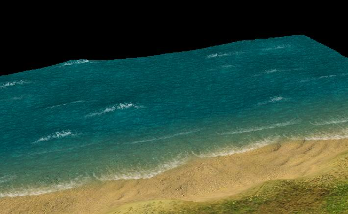

By Alexander Valencia
23 мая 2003
Graphics technology (publisher’s view)
Игра делается полностью трёхмерной. Графическое ядро старается максимально использовать возможности существующих 3D accelerator’ов и учитывать их недостатки J.
Механизм наложения теней общий sample-based, позволяющий делать тени от всего на всё (в том числе и self-shadows) вне зависимости от сложности картинки.
Ландшафт
Ландшафт представляет из себя сетку высот. Текстуры создаются для него на этапе генерации (pre-processing), что позволяет сделать их максимально разнообразными и красивыми (всё-таки off-line алгоритмы обработки позволяют сделать гораздо больше, нежели on-line). К сожалению, это существенно увеличивает размер карты – для одной карты 14х14 (самая большая single-player карта в Blitzkrieg’е I) объём текстур составит около 32MB. Для передачи карт по интернету (скачивание новых карт, патчи, download-on-demand) будет существовать специальный формат, содержащий минимум информации, из которой на машине пользователя будет произведена генерация всех текстур и мешей карты. Ниже приведён пример текстуры, сгенерённой из текстур травы (2 вида – жёлтая и зелёная) и песка путём сложного склеивания слоёв по шумовым маскам

Вода
В дополнение к существующим (в Blitzkrieg I) рекам разработана вода морского побережья и прибрежной зоны (не deep water!). Технологически она представляет из себя четыре части – геометрические волны (грубые), текстурные волны (мелкие), полоса прибоя, «барашки» на геометрических волнах. Геометрические волны являются полностью процедурными. Текстурные волны и «барашки» представляют из себя анимированные текстуры (заранее подготовленные художниками). Прибой сделан на не анимированной текстуре процедурным изменением геометрической сетки. Ниже приведён пример воды с «барашками» и береговой линией.

Объекты, юниты, эффекты, etc.
Все объекты в игре трёхмерные. Это позволяет создавать их действительно большими и с плавными анимациями. Технология партикл-эффектов позволяет сделать сложные эффекты в игре - пыль из под колёс, огонь, дым, взрывы, осадки (дождь, снег, пылевая буря) и многое другое. Дополнительными слоями делаются следы от гусениц, побитости на технике и т.д.